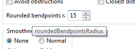

The standard UML specification provides a few hints to represent graphical elements. However, it only focuses on the general representation of these elements (e.g. A Class is a rectangle, with optional compartments for its attributes and operations, and its name should be displayed in italic if the Class is abstract).
Nevertheless, for a better readability (and even esthetic), the user has a certain freedom for changing some graphical properties, such as an Element’s color. Until now, in Papyrus, this customization could be done by two complement means:
While this allows defining a custom theme for our diagrams, this mechanism suffers from a few limitations:
The release of Eclipse 4 Juno this summer gave us the opportunity to
rely on their CSS Engine to support Cascading StyleSheets in Papyrus
diagrams. Just like in web pages, the CSS format is used to separate
the contents of our diagrams from their appearance. It becomes
possible to change the appearance of a whole diagram, or even a set of
diagrams, independently of the number of represented elements, in a
single click.
The CSS Stylesheet support is not shipped in the base installation of Papyrus. However, it can be easily installed from the Papyrus discovery site. Select “Help”, “Install Papyrus Additional Components”, and check “Diagram Stylesheets”.
Press finish, restart Eclipse, and that's it.
Your diagrams should now look like the following:


Note: If you opened a diagram which has been created without the CSS Support, it may still have a custom appearance, e.g. without Element icons. This might or might not be a problem, as this may conflict with the CSS Theme. You can reset all custom appearances by pressing the “Default style” button in the Style tab of the Diagram’s properties view.
To define a custom style, the first step is to create a Stylesheet.
The creation is really straightforward: a Stylesheet is a text file
with the .css extension. You can create such a file using the “New
> File” wizard.
Then, you need to associate this file with your diagram. Select a
diagram, and then go to the Style tab of the properties view, and add
a new “Diagram style sheet”. There isn’t currently any style sheet
available from the diagram, so you need to create a new “Stylesheet
reference”.

Browse your workspace to find your css file, and then validate. Your
stylesheet is now associated to your diagram.
Papyrus Stylesheets are stored in text files with the “.css” extension
(e.g. stylesheet.css).
The CSS syntax is a list of rules, which associates selectors and
properties.
Eclipse implements the 2.1 version of the CSS syntax. The available
selectors are:
The pseudo-selectors are currently not used in Papyrus.
These selectors can be combined using one of the following
combinators:
A rule also contains a list of properties, in the form property:value;
In Papyrus, the selectors apply to semantic elements and properties
(i.e. UML Elements), and the properties apply to the appearance
properties (i.e. GMF Appearance properties). A few custom properties
(Independent from the GMF Appearance model) are also available.
* {
fillColor: red;
fontColor: #0000FF;
}
Meaning: all elements should be filled in red, and all texts should be
blue (RGB Color #0000FF)
Class {
gradient: white vertical;
elementIcon:true;
shadow:true;
qualifiedNameDepth:full;
}
Meaning: this style applies to all UML Classes. They will have a white
and vertical gradient. The Element icon and the shadow will be
displayed, as well as their fully qualified name.
ClassDiagram Class>Property {
fontColor: red;
}
Meaning: The properties directly contained in a Class, which is drawn
on a ClassDiagram (Either as a root element of the diagram, or in a
Package) will be displayed in red.
[appliedStereotypes~="Block"]{
bold:true;
}
/* Equivalent: qualified name */
[appliedStereotypes~="SysML::Blocks::Block"]{
bold:true;
}
Meaning: The elements with the "Block" stereotype must be displayed in bold.
[appliedStereotypes~=Block][isEncapsulated=true]{
fontColor:red;
}
Meaning: The elements with the "Block" stereotype, and the stereotype property "isEncapsulated" set to true, must be displayed in red.
Papyrus also provides a tool to generate a CSS Rule from an element displayed in the diagram. You need to create a stylesheet before you can edit it with the Create style tool, and it is recommended (Although not required) to associate this style sheet with your current diagram.
To use it, create an element and change its appearance via the
“Appearance” tab of the properties view. Then, right click on the
element, and select “Format”, “Create a new style”. The dialog box
contains three tabs:

In the Stylesheet tab, select your stylesheet:
In the conditions tab, there are three groups of options:
The properties tab contains all the graphical properties that can be
applied to the selected object. It is used to choose the graphical
properties to apply on the objects matching the conditions.
Selector properties are semantic element properties. They can be used with one of the following syntaxes:
[isAbstract=true]
Class[isAbstract=true]
The supported semantic element properties are:
Some selectors can also be used to represent some specific parts of an element. For example, it is possible to hide a specific compartment:
Class > Compartment[kind="attribute"] {
visible:false;
}
Class > Compartment[kind="symbol"] {
visible:true;
}
Compartment[kind="structure"]{
collapsed:true;
}
Style properties are graphical properties supported by the display. Note that some graphical elements may not support some specific properties (Either because they shouldn't support them, or because they are not yet implemented). For example, a UML::Class will not support the italic property, because in UML, italic means abstract.
The CSS Supports all GMF Notation properties, as well as a few Papyrus-specific properties. This chapter will only list all the Papyrus-specific properties.
The simplest way to discover new style properties is to use the Appearance tab of the Properties view in Papyrus. When hovering one of the appearance properties, the tooltip indicates the name of the corresponding CSS property

The following custom properties are supported:
displayBorder: true | false
displayName: true | false
maintainSymbolRatio: true | false
elementIcon: true |
false
shadow: true | false
qualifiedNameDepth: full
| none | [int]
The computed styles will be applied automatically. For example, if your stylesheet tells that all your abstract classes must be red, the classes color will change automatically according to the value of their “isAbstract” property.
In some other cases, however, you may want to specify manually the
style that should be applied to your objects. For this case, you can
use the “Applied styles” property in the “Style” tab of the properties
view.
.myOwnStyle {
fillColor: #A6C198;
gradient:white horizontal;
}

Once a style is applied on an object, the object will be refreshed
each time the style definition changes. For example, changing the
style “myOwnStyle” to the following declaration:
.myOwnStyle {
fillColor: #E3A49C;
gradient: #FFFFFF horizontal;
}
All the green classes will become red.
Once you have defined your style sheet, you may want to export it to create a new theme (Or to extend an existing theme). To do so, Papyrus provides an extension point: org.eclipse.papyrus.infra.gmfdiag.css.theme.
This extension point needs two entries: a Theme Definition (ID, Label and icon of the Theme), and Theme contributions (A set of style sheets which will compose the Theme). More than one plug-in can contribute to the same Theme, which makes it possible to extend a Theme.
The Theme can be modified from the Papyrus preferences page “CSS
Theme”. Only one theme can be activated at the same time. A Theme
applies to all Papyrus Diagrams from the workspace.
There are currently a few identified limitations to the Stylesheet
framework, as well as a few minor bugs.
Currently, some complex selectors are not supported in the Papyrus
stylesheets.
It is not possible to apply a style to all descendant of a given
Metaclass. For example, a Behavior will not inherit styles from a
Class, although a Behavior actually is a Class.
It is currently not possible to customize labels from the Stylesheets (e.g. show/hide type for all properties).
Selectors based on user events are not yet implemented. For example,
the CSS specification defines the :hover pseudo-selector to
represent an element hovered by the mouse, which is not yet supported
in Papyrus.
Currently, stylesheets can only be applied to a Diagram. It is not yet
possible to apply a stylesheet on a Model or a Project.
The only way to define a workspace theme is through the use of a
plug-in which defines a new extension. It is not yet possible to
create a new local theme from the preferences page.
The following bugs have been identified: